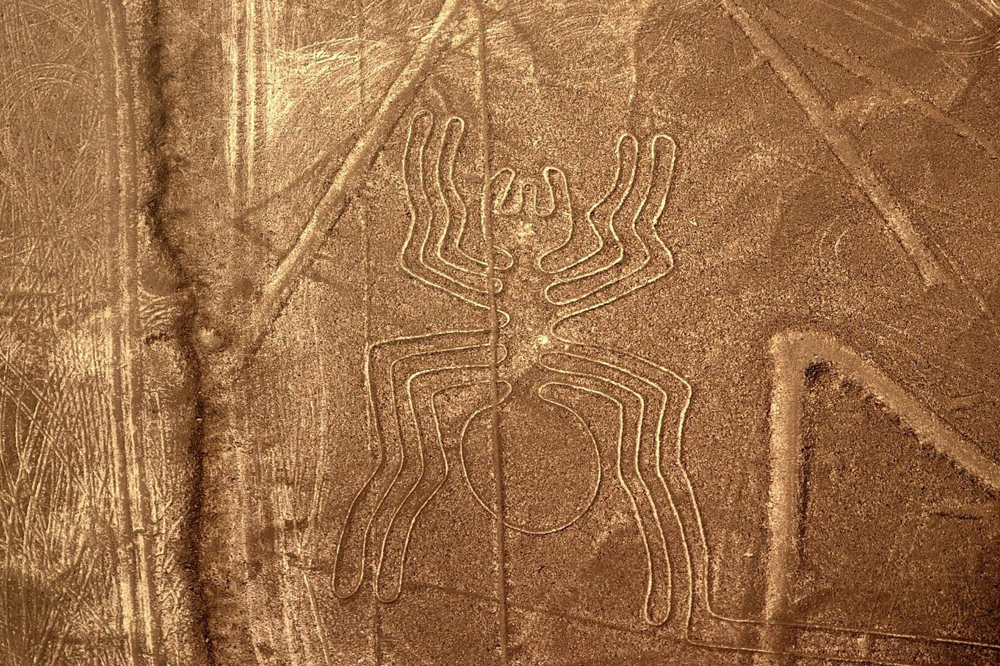
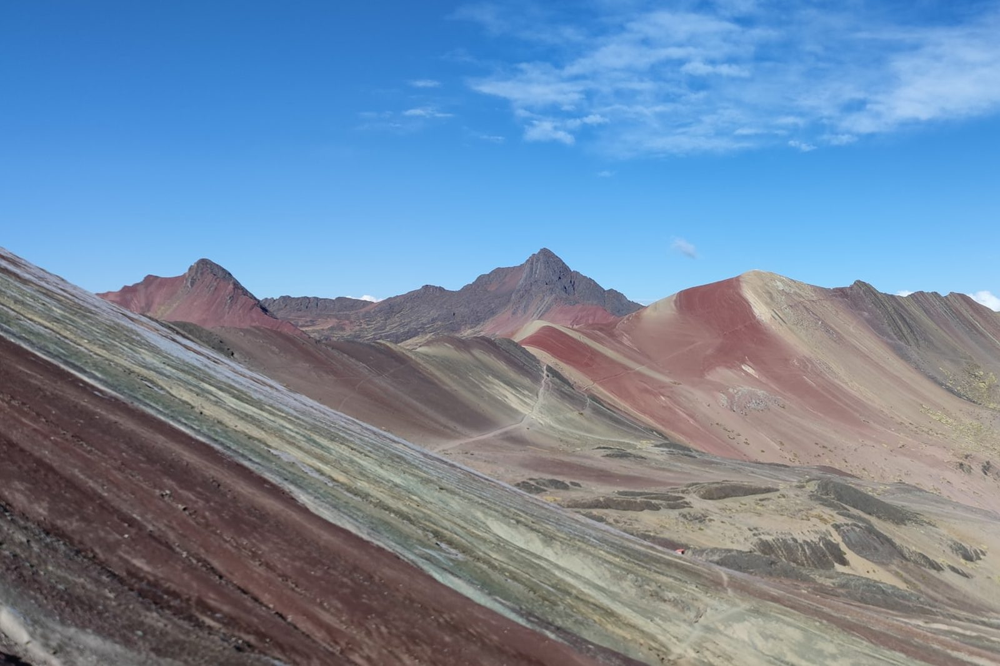
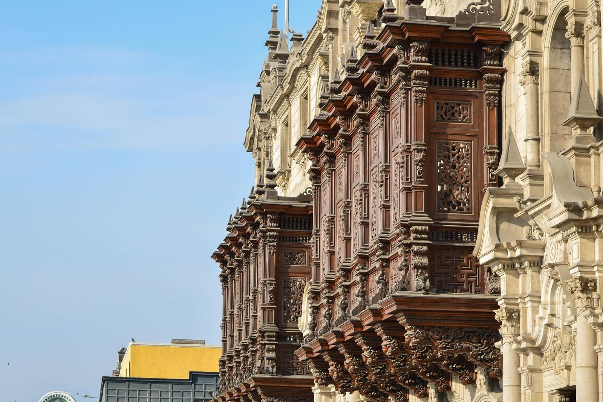
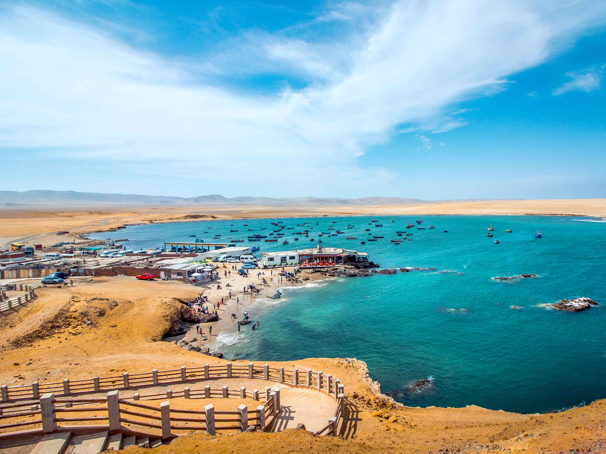
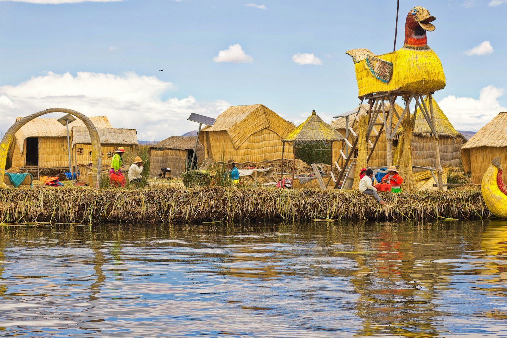
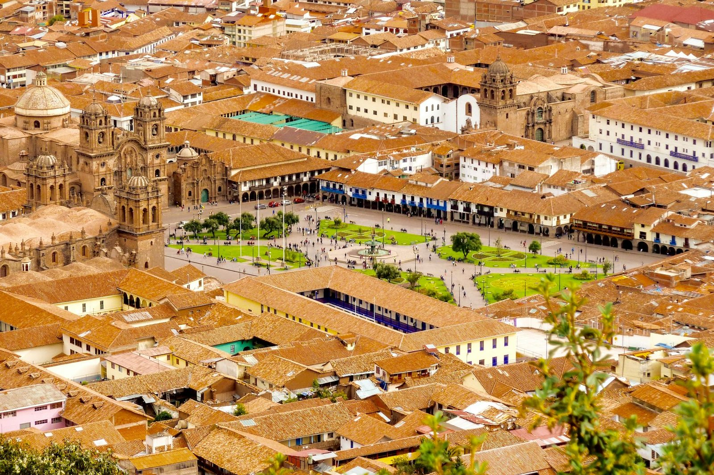
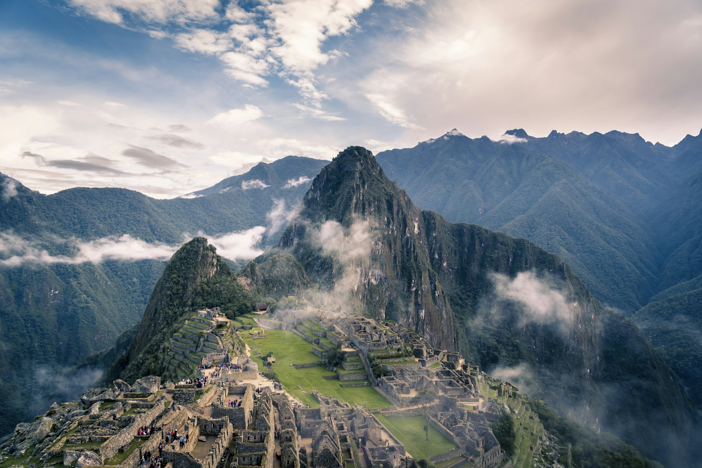
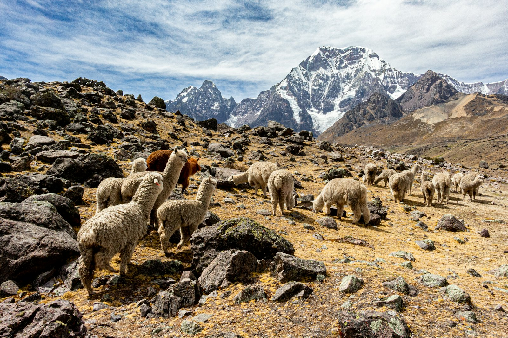

Enigmatic Peru
Lima · Paracas · Ica · Nazca · Puno · Lake Titicaca · Cusco · Sacred Valley · Machu Picchu · Rainbow Mountain

Peru's great enigmas
Colonial Lima and its catacombs, the desert coast of Paracas and Huacachina, the mystery of the Nazca Lines from the air, the reed islands of Titicaca and, at the last, Cusco, Machu Picchu and the painted slopes of Vinicunca.
Twelve days that climb from the Pacific to the high Andes, following the old Sun Route from Puno into Cusco. As ever, every day stays yours to reshape — in pace, in comfort and in the moments that matter most to you.
Places you'll visit
What's included
Included in your journey
- Airport, station and hotel transfers in Lima, Nazca, Puno and Cusco
- Coach travel Lima · Paracas · Ica · Nazca · Lima
- 11 nights' accommodation with breakfast — 3 in Lima, 1 in Nazca, 2 in Puno and 5 in Cusco
- Lima city tour, colonial and modern, with the San Francisco catacombs
- A boat trip to the Ballestas Islands, and an Ica city tour with the Huacachina oasis
- The classic scenic flight over the Nazca Lines, with airport tax
- The Sillustani burial towers, en route from Puno airport
- The Uros and Taquile islands of Lake Titicaca, with a traditional lunch
- The Sun Route from Puno to Cusco by tourist coach, with a buffet lunch
- Cusco city tour and its four archaeological sites
- The Sacred Valley, with a buffet lunch
- Machu Picchu by Expedition or The Voyager tourist train, with a guided visit and lunch
- Vinicunca, the Rainbow Mountain, with breakfast and lunch
- Entrance fees to every site visited
- Bilingual guides (Spanish / English) and assistance throughout
Not included
- International flights to and from Peru
- Domestic flights (Lima to Puno, and out of Cusco)
- The Nazca Lines tourist ticket (paid locally)
- Travel insurance
- Meals not listed in your itinerary, and drinks with meals
- Early check-in, late check-out and hotel extras
- Gratuities for guides, drivers and waiters, and personal expenses
Prices are per person, based on two adults sharing a double room in budget 3-star accommodation. International and domestic flights are not included — we quote them separately according to your dates and preferences.
The itinerary
- Day 1
Arrival in Lima
A warm welcome at Jorge Chávez airport and a transfer to your hotel.
- Day 2
Lima, colonial & modern
Huaca Pucllana, the San Isidro olive grove, the Museum of Art and Plaza San Martín, the Plaza de Armas (Cathedral, Government Palace, City Hall), the San Francisco monastery and its catacombs, and sunset over the Pacific at Parque del Amor and Larcomar.
- Day 3
Lima · Paracas · Ica · Nazca
An early start for the Ballestas Islands — "El Candelabro", Humboldt penguins, sea lions and seabirds — then a traditional wine and pisco cellar in Ica, dune buggies and sandboarding at the Huacachina oasis, and on to Nazca by coach.
- Day 4
The Nazca Lines · Lima
A scenic flight over the Nazca Lines — the Spider, the Hummingbird, the Monkey — then the coach back to Lima.
- Day 5
Lima · Puno · Sillustani
A flight to the altiplano and, on the way to Puno, the great burial towers of Sillustani above Lake Umayo.
- Day 6
Lake Titicaca
A fast boat to the Uros floating islands, woven from totora reed, then the island of Taquile, with lunch and time among its weavers.
- Day 7
The Sun Route · Puno to Cusco
The Pukara lithic museum, the La Raya pass, a buffet lunch, Raqchi and the temple of Wiracocha, and the Andahuaylillas chapel — "the Sistine Chapel of the Americas".
- Day 8
Cusco & its archaeological park
Plaza Mayor, the Cathedral, Qoricancha, Sacsayhuamán, Qenqo, Puca Pucara and Tambomachay.
- Day 9
The Sacred Valley
Pisac and its artisan market, lunch in Urubamba, the living Inca town of Ollantaytambo, and the weavers of Chinchero.
- Day 10
Machu Picchu
A full day at the citadel, by scenic train and bus, with a guided visit and lunch in Aguas Calientes.
- Day 11
Vinicunca · the Rainbow Mountain
An early start beneath Ausangate, breakfast in Cusipata, and a walk of about two hours to the painted slopes of Vinicunca, with lunch on the way back.
- Day 12
Departure from Cusco
A last breakfast in the city of the Incas before your transfer to the airport.
Along the way





No email required — the full day-by-day, with pricing notes and how to reach Patricia. Regenerate with scripts/build-dossiers.sh.
Designed personally by Patricia
Peruvian-born and based in the UK for nearly 25 years, Patricia designs every itinerary herself and knows the guides, cooks and families along the way in person. You deal directly with her — never a call centre.
Every day here is a starting point — reshaped, in full, around your budget, your style and your palate.
